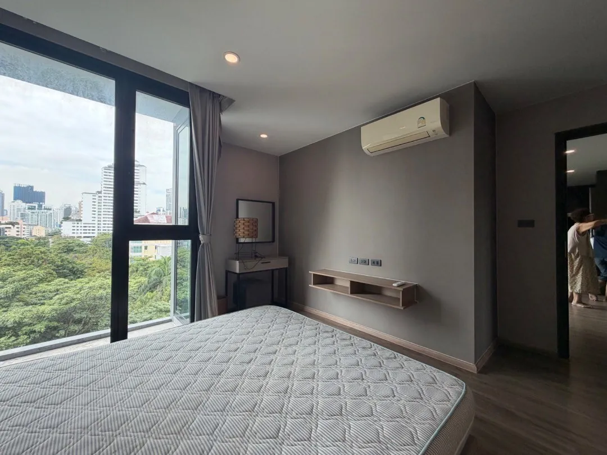
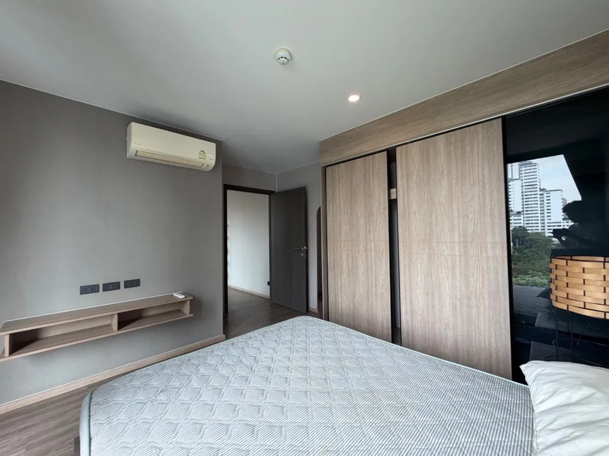
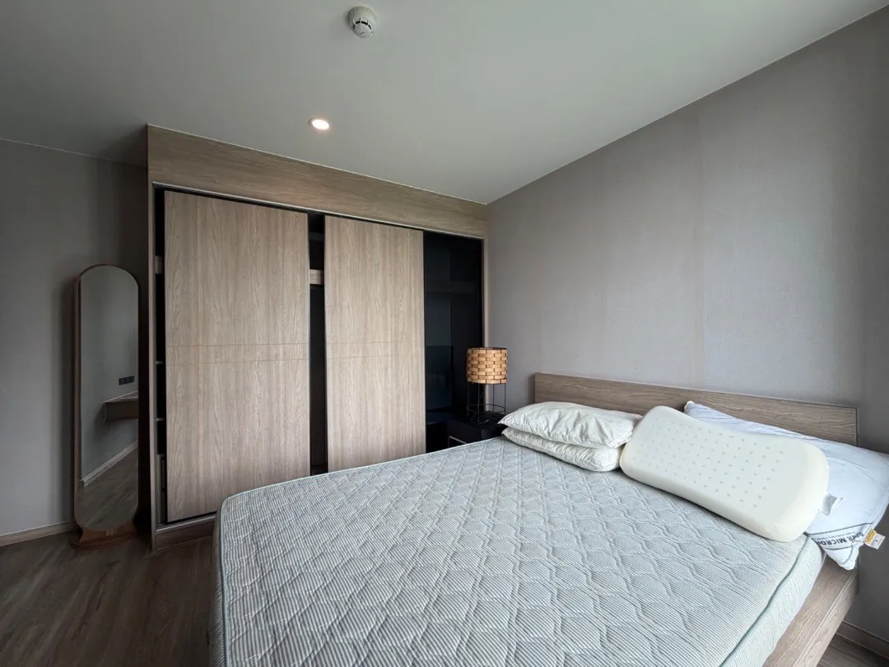
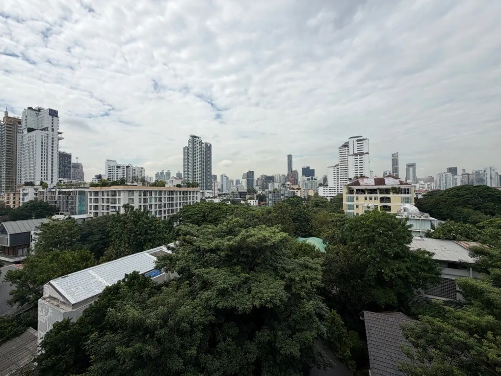
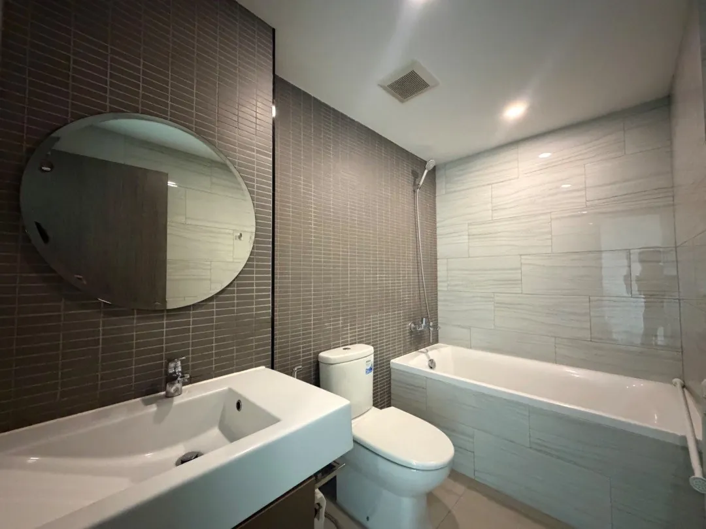

Oasis Spa (Bangkok, Sukhumvit 31)
สปา · ประมาณ 9 นาที
4.7 จาก 2,368 รีวิว · คะแนนจาก Google (12 พ.ย. 2569)
เปิดใน Google Maps







ย่านพร้อมพงษ์ · 41 ตร.ม. · 1 ห้องนอน · รหัส MC-021
ให้เช่า The Teak Sukhumvit 39 - 1 Bed Plus 41 Sq.m (มีอ่างอาบน้ำ) 28,000 บ./เดือน ใกล้ BTS พร้อมพงษ์
• 1 ห้องนอน 1 ห้องน้ำ พร้อมอ่างอาบน้ำ
• 41 Sq.m.
• ห้องนั่งเล่นและพื้นที่รับประทานอาหาร
• Pantry และครัวพร้อมอุปกรณ์พื้นฐาน
เฟอร์นิเจอร์ครบ พร้อมชุดเครื่องนอน
เครื่องใช้ไฟฟ้าครบ
ใกล้ BTS พร้อมพงษ์ ประมาณ 1.4 กม.
ค่าเช่า 28,000 บาท/เดือน
สัญญาขั้นต่ำ 1 ปี
ประกัน 2 เดือน + ล่วงหน้า 1 เดือน
สิ่งอำนวยความสะดวก
ตำแหน่งโดยประมาณ
ร้านด้านล่างเป็นสถานที่จริงใกล้โครงการ ระยะเดินเป็นค่าประมาณ · อ่านหน้าย่านพร้อมพงษ์
สปา · ประมาณ 9 นาที
4.7 จาก 2,368 รีวิว · คะแนนจาก Google (12 พ.ย. 2569)
เปิดใน Google Mapsร้านอาหาร · ประมาณ 12 นาที
4.5 จาก 2,699 รีวิว · คะแนนจาก Google (12 พ.ย. 2569)
เปิดใน Google Mapsร้านอาหาร · ประมาณ 17 นาที
4.8 จาก 830 รีวิว · คะแนนจาก Google (12 พ.ย. 2569)
เปิดใน Google Mapsคาเฟ่ · ประมาณ 18 นาที
4.5 จาก 2,839 รีวิว · คะแนนจาก Google (12 พ.ย. 2569)
เปิดใน Google Mapsช็อปปิ้ง · ประมาณ 18 นาที
4.5 จาก 24,902 รีวิว · คะแนนจาก Google (12 พ.ย. 2569)
เปิดใน Google Mapsสวน · ประมาณ 21 นาที
4.5 จาก 6,818 รีวิว · คะแนนจาก Google (12 พ.ย. 2569)
เปิดใน Google Mapsสปา · ประมาณ 22 นาที
4.5 จาก 2,134 รีวิว · คะแนนจาก Google (12 พ.ย. 2569)
เปิดใน Google Mapsช็อปปิ้ง · ประมาณ 24 นาที
4.6 จาก 21,550 รีวิว · คะแนนจาก Google (12 พ.ย. 2569)
เปิดใน Google Mapsคาเฟ่ · ประมาณ 24 นาที
4.7 จาก 2,247 รีวิว · คะแนนจาก Google (12 พ.ย. 2569)
เปิดใน Google Maps